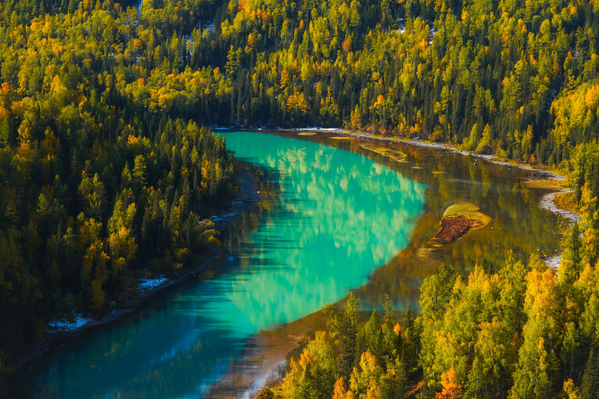
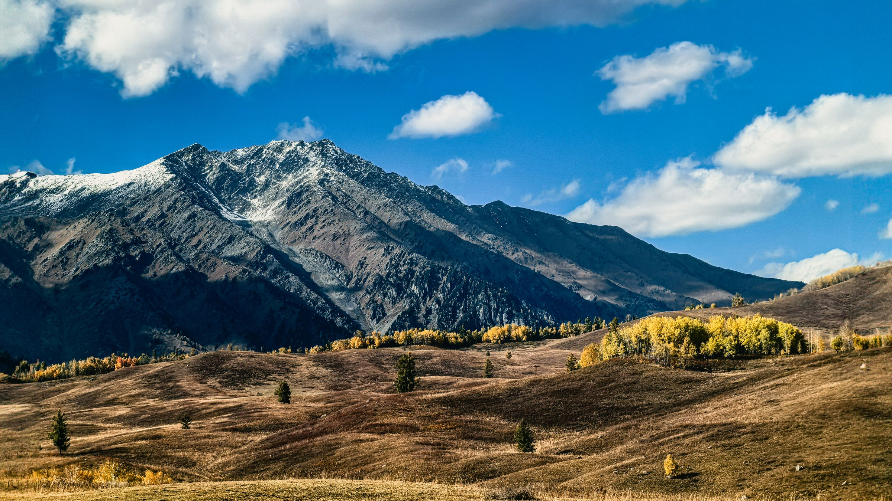
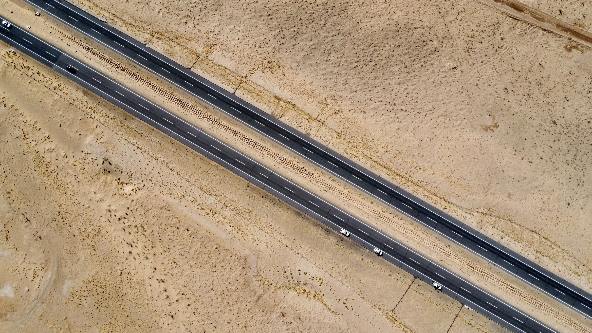
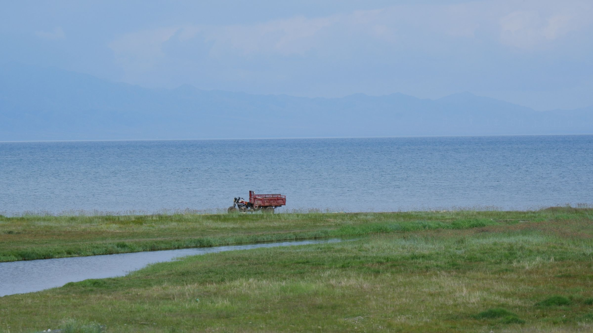

双湖双景区住宿
喀纳斯湖与赛里木湖双湖串联，禾木、白哈巴连续入住景区特色木屋。

FULL LAKES · FULL AUTUMN
WHY THIS JOURNEY
把日落、晨雾、蓝湖、木屋和公路都留进旅程。2—6 人纯玩小团，全程无购物安排。
喀纳斯湖与赛里木湖双湖串联，禾木、白哈巴连续入住景区特色木屋。
S21 沙漠高速与阿禾公路双线穿越，一路看沙漠、森林、河流与草原。
禾木赠送轻旅拍，每人 9 张简修照片；赛湖安排一团一条跟车视频。
2 人成行、6 人封顶，1+1 独立座椅，全程无购物安排。

阿勒泰 · 雪山与金色草原
新疆 · 穿越沙海
赛里木湖 · 大西洋最后一滴眼泪DAILY ITINERARY
乌鲁木齐集散，沿 S21 向北进入阿勒泰，再由喀纳斯西线前往赛里木湖，最后返回乌鲁木齐。
24 小时接机或接站，入住乌鲁木齐携程五钻酒店，自由感受瓜果歌舞之乡。
宿：乌鲁木齐携程五钻穿越 S21 沙漠高速，游克拉美丽沙山公园，途观乌伦古湖；乘将军山落日缆车，参加夕阳派对与露天电影。
宿：阿勒泰携程四钻阿禾公路开放时自驾穿行乌希里克、通巴森林与托勒海特草原，进入禾木村，安排轻旅拍与自然森系下午茶。
宿：禾木景区特色木屋上午在禾木看炊烟晨景，下午沿喀纳斯湖边漫步，傍晚抵达“西北第一村”白哈巴。
宿：白哈巴大窗特色木屋从白哈巴返回喀纳斯，依次游览神仙湾、月亮湾、卧龙湾，随后前往克拉玛依。
宿：克拉玛依携程四钻自驾环湖，择优游览月亮湾、亲水滩、西海草原、克勒涌珠、网红 S 弯等点位，拍摄赛湖跟车视频。
宿：赛湖小镇携程四钻清晨二进赛里木湖，在月亮湾附近散步观景，随后返回乌鲁木齐。
宿：乌鲁木齐携程四钻早餐后按航班或车次安排 24 小时送机、送站，结束北疆双湖之旅。
送机 / 送站STAY & SERVICE
城市品质酒店与景区木屋搭配，既保留住宿舒适度，也不错过景区日出、日落与晨雾。
TRAVEL NOTES